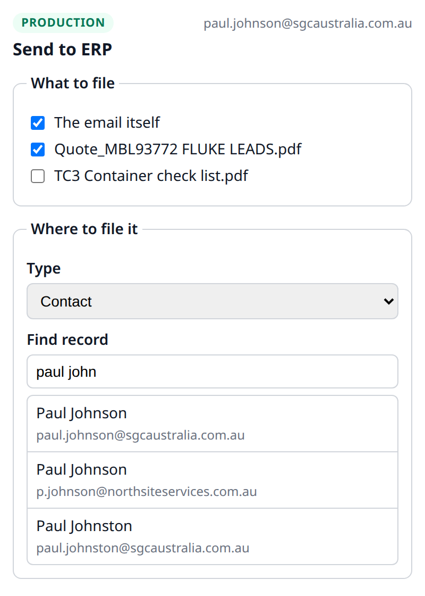
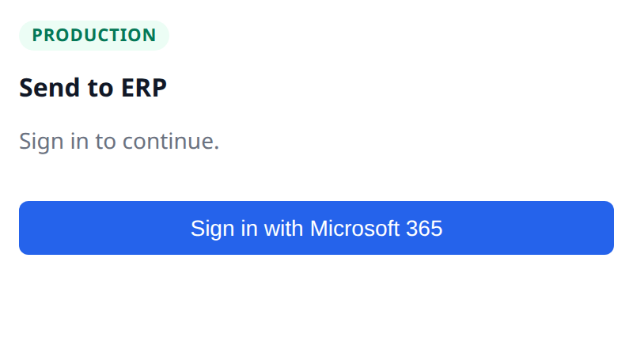
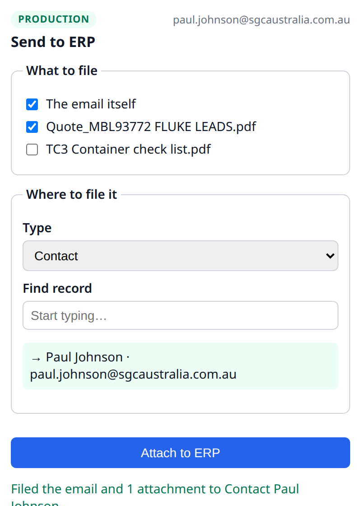

The old way meant downloading attachments and re-uploading them, and dragging emails from Outlook never worked reliably. Send to ERP replaces all of that with a single button: pick what to keep, choose the record, done.
1.What it does
From an open email you choose what to keep (the message itself and/or individual attachments), optionally add a short note, search for the record to file it against, and click Attach to ERP. The result:
- The email is saved to the record's timeline (as a Communication).
- Each chosen attachment is saved as a File on the record.
- Any note you add is posted as a timeline comment on the record.
You can file against any of these record types:
Contact Project Purchase Order Supplier Sales Invoice Purchase Invoice
Or choose Task / To-Do: instead of an existing record, pick a person and a new task is created for them, with the email filed against it (and your note becomes the task's description).
You only ever see records you already have permission to open in ERP.

2.Quick start: install it (admin, one-time)
Installation is done once by a Microsoft 365 administrator, in two parts.
<your-erp-host> below with your live ERP site's hostname, and use your own
Azure app registration (its client ID is in the add-in manifest, under WebApplicationInfo).
Part A: Azure (one-time)
The add-in signs people in with Microsoft 365, so Microsoft needs to know the allowed return addresses.
- Azure portal → Microsoft Entra ID → App registrations.
- Open the add-in's app registration (the one whose client ID is in the add-in manifest).
- Left menu → Authentication.
- Under the Single-page application platform, ensure these three redirect URIs exist, then Save:
brk-multihub://<your-erp-host>https://<your-erp-host>/assets/m365email/sendtoerp/taskpane.htmlhttps://<your-erp-host>/assets/m365email/sendtoerp/dialog.html
Part B: Upload the add-in
- Download the package:
https://<your-erp-host>/assets/m365email/sendtoerp/sendtoerp-prod.zip - Microsoft 365 admin centre → Settings → Integrated apps.
- Upload custom apps (first time), or open “Send to ERP” → Update file (to deploy a new version).
- Select the
.zip, choose who gets it (Just me for a pilot, or specific groups / everyone), accept and finish.
?v= and any number, e.g. …/sendtoerp-prod.zip?v=103, and upload that fresh file.
3.How to use it
Open the email & the panel
Open the email you want to file. Find Send to ERP on the Outlook ribbon or under the ••• (More actions) menu. A panel opens on the right.
Check the badge, then sign in
At the top of the panel, confirm the tag reads Production , the live system. If you see Staging (the test system), close it and use the other Send to ERP button.
Sign in with Microsoft 365, automatic on desktop; on the web a small sign-in window pops up. No ERP password is needed.

Choose what to file
Under What to file, tick The email itself and/or any attachments you want to keep. You can also type a short note in the comment box; it is posted as a timeline comment (or becomes the description when you create a Task/To-Do).
Choose where to file it
Under Where to file it, pick a Type, then start typing in Find record. Click the record you want. For contacts, the email address shows beneath the name, so two people with the same name are easy to tell apart.
To create a task instead, choose Task / To-Do as the Type and pick the person to assign it to. A new task is created for them and the email is filed against it.
Attach to ERP
Click Attach to ERP. You'll get a confirmation, and the email and chosen attachments now sit on that record's timeline in ERP.

4.How it works (for the curious / IT)
The panel
A small web page served by ERP itself, same-origin with your data, no separate web server.
Sign-in
Uses your Microsoft 365 identity. Desktop gets a token silently; the web opens a separate sign-in window. ERP verifies the token and maps it to your user.
Permissions
Normal ERP permissions apply, you can only file against records you're allowed to edit.
Where it lives
The m365email app: panel in public/sendtoerp/, API in
send_to_erp.py, sign-in check in addin_sso.py.
5.Troubleshooting
| Symptom | Likely cause | Fix |
|---|---|---|
| Button doesn't appear in Outlook | Deployment still propagating; desktop is slow | Wait, then fully quit & reopen Outlook. Admin: check it shows OK in Integrated apps. |
| Two “Send to ERP” buttons, or it filed somewhere you can't find | You used the Staging one | Use the button whose badge says Production. |
| “Couldn't sign in” on the web; no sign-in window | Dialog redirect missing in Azure | Admin: add …/dialog.html under Single-page application (Part A). |
| “Elevated permission is required… body.getAsync” | Old add-in version | Admin: update to package v1.0.4 or later. |
| Admin “upload failed / check the manifest” | A stale cached .zip was uploaded | Re-download with a ?v= cache-buster and upload the fresh file. |
| “Your Microsoft account isn't linked to an ERP user” | Your Microsoft email doesn't match an enabled ERP user | Admin: ensure the user exists and is enabled in ERP with the same email. |
6.Status & limitations
- Pilot: currently deployed to a limited group for testing before a wider rollout.
- Outlook for Mac (desktop): working.
- Outlook on the web: working (sign-in via the dialog window).
- Outlook for Windows (desktop): not yet tested.
- For IT, before full rollout: set production's web server to not cache the add-in files, so updates reach users immediately (and the
?v=workaround is no longer needed).